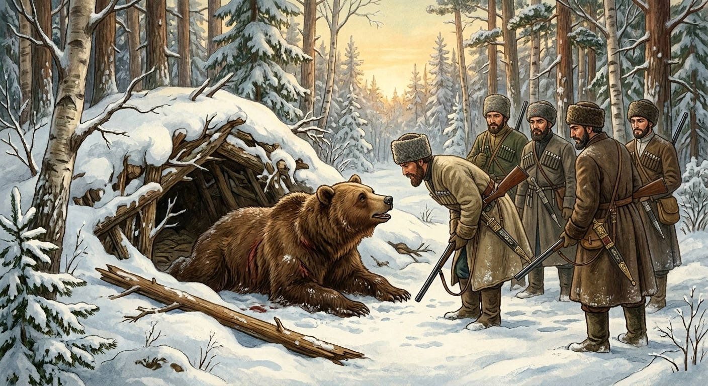

И.А. Дахкильгов. Хьехаме дувцарш - поучительные рассказы-притчи.
И.А. Дахкильгов. Хьехаме дувцарш - поучительные рассказы-притчи. Из ингушского фольклора.

Ше леш чано аьннар
Чарахьашта цкъа, Ӏай, ча чуйижа йола къорг кораяьй. Цу чура ча яьккхар духьа, бӀаьха гӀуркх къорга чу Ӏетта болабенна уж. ГӀуркх кӀаьдича Ӏетталуш хиларах хайнад чарахьашта, чана из Ӏетталуш болга. ТӀеххьара сомаяьккхай ча. Ӏехаш, корзагӀяьнна, араийккхай из. Чарахьаша топаш йийтай цунна. Са озаш уллаш хиннай ча. Цхьан чарахьа хаьттад цунга: - Леш ма йий хьо. Цхьаккха дегабоалам болаш дӀайодий хьо укха дунен тӀара? - Се набарах яьккхар а, се ер а, цхьаккха дагадаллац сона. Сай бочача метте Ӏувттабена гӀуркх дагабоалаш, дега Ӏеткъа, леш се хилар хала хет сона, - аьннад чаво.
РУССКИЙ
Умирая, медведь сказал…
Однажды зимою охотники наткнулись на медвежью берлогу. Чтобы выманить из нее медведя, охотники стали тыкать в нее большую палку. Когда она наткнулась на что-то мягкое, охотники поняли, что палка тычется в медведя. Наконец, медведь проснулся от спячки. С ревом и злой он выскочил из пещеры. Охотники разрядили в него свои ружья. Умирает медведь, и тут один из охотников поинтересовался у него: - Ты умираешь, скажи, покидая этот мир, о чем ты больше всего сожалеешь? - Я не держу зла, что меня разбудили, прощаю, что меня убили. Об одном я сожалею и простить не могу. Это позор, который я испытал, когда меня тыкали палкой в мое мягкое место.
ENGLISH
As he lay dying, the bear said…
One winter, some hunters came across a bear's den. To lure the bear out, they began poking at the den with a large stick. When the stick hit something soft, the hunters realised it was poking the bear. Finally, the bear awoke from hibernation. Roaring furiously, he burst out of the den. The hunters fired their guns at him. As the bear lay dying, one of the hunters asked him: 'You're dying now; tell me, as you leave this world, what do you regret most of all?' 'I bear no grudge for being woken up; I forgive you for killing me. There is only one thing I regret and cannot forgive. It is the humiliation I felt when you poked me with a stick in my private parts.'
НОХЧИЙН
ПОГОВОРКИ
Аькхано баькха сардам чарахьах бода. Проклятие подстреленного зверя настигает охотника. The curse of the wounded animal follows the hunter. Аькхано лечу дукхал сардам чарахочунна т1е доьду.Багара даьнна дош ткъамала дахад. Лишь произнеси слово, оно тут же обрело крылья. The moment a word leaves your mouth, it grows wings. Багара баьлла дош ткъемаш чуеана.Во дош къорачоа а хоз. Плохое слово и глухой услышит. Even the deaf will hear a bad word. Вон дош ла хезачунна а хезаш ду.Воча чарахьа даиман топ харцахьа ювл. У плохого охотника ружье в цель не попадает. A bad hunter's gun always misses the mark. Вон чарахочун топ дуьйна харцахьа яьккхина.Дика яьккха нийсахо – лар тӀа ена юхьӀаьржо. Позор смывается полной победой справедливости. Disgrace is washed away only by a full victory of justice. Дика байна нийсахо, юьхьаьржо д1а а йоьху.Ды белча, дирст юс; саг велча, цӀи юс. Околеет конь – уздечка останется; помрет человек – имя останется. When the horse dies, the bridle remains; when a man dies, his name remains. Говр елча, дирст диса; стаг велча, ц1и диса.Ийрчача дешо дега чов ю, хозача дешо дега тоам бу. Скверное (некрасивое) слово сердце ранит, хорошее (доброе) слово сердце радует. An ugly word wounds the heart; a beautiful word delights it. Ирча дашо дегнахь чов бо, хаза дашо дог веладо.Наьха бага ваха атта да; багара вала хала да. Легко попасть на язык сплетников, но нелегко очиститься от сплетен. It's easy to fall into people's gossip, but hard to clear yourself of it. Наха багара баха атта ду, багара вала хала ду.Наьха бага даха йоахар бакъхинна дӀадахад. Сплетня, пошедщая по кругу, стала правдой. A rumour that made the rounds became accepted as truth. Наха багара баьхна йоахар бакъдерг хийтта.Наьха йоахарех лора ца веннар сийдоацача ваьннав. Кто не остерегался сплетен, тот ходил оклеветанным. One who didn't guard against gossip ended up walking around slandered. Наха йоахарх ца лорайелла верг сий доцуш лелла.Урсо техар ерзаргъя, метто яьр ерзаргъяц. Рана, нанесенная ножом, заживет, рана, нанесенная языком, не заживает. A knife wound heals; a wound from the tongue never does. Урсо тоьхна чов ерзаргва, маттара баьлла чов ерзаргва дац.Шозза валар да дийна воллашехьа валар. Умереть, будучи опозоренным, значит умереть дважды. To die in disgrace while still alive is to die twice. Дийна волуш сий даьлла валар шозза валар ду.